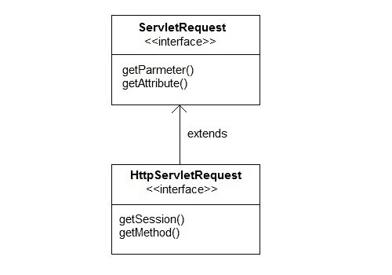
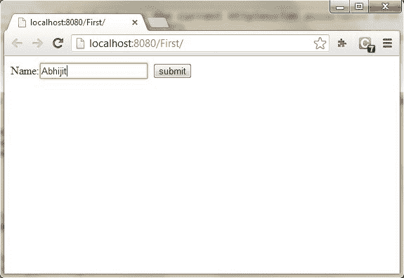
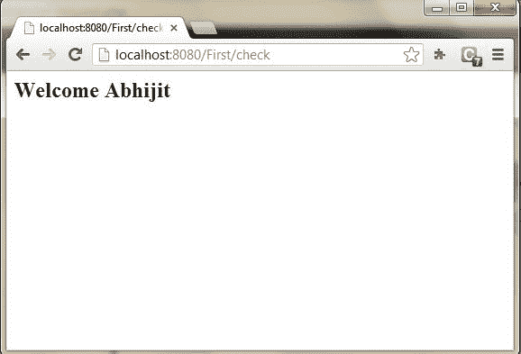

ServletRequest类简介
Servlet 的真正工作是处理客户端请求。Servlet API 提供了两个重要的接口javax . servlet . servlet request和javax . servlet . http . httpservletrequest封装客户端请求。这些接口的实现向 servlet 提供了关于客户端请求的重要信息。
服务请求的一些重要方法
| 方法 | 描述 |
| 对象getAttribute(String name) | 按名称返回请求对象的属性集 |
| 枚举getAttributeName() | 返回包含该请求中可用属性名称的枚举 |
| int getContentLength() | 请求正文的返回大小 |
| int getContentType() | 返回请求内容的媒体类型 |
| servletinputstream〔t0〕 | 返回用于读取二进制数据的输入流 |
| 弦getParameter(String name) | 按名称返回参数值 |
| 弦getLocalAddr() | 返回接收请求的接口的互联网协议地址 |
| 枚举getParameterNames() | 返回所有参数名称的枚举 |
| 字符串[] getParameterValues(String name) | 返回一个 String 对象数组，其中包含给定请求参数的所有值，如果参数不存在，则返回 null |
| servletcontext〔t0〕 | 返回当前请求的 servlet 上下文。 |
| 弦getServerName() | 返回向其发送请求的服务器的主机名 |
| int getServerPort() | 返回请求发送到的端口号 |
| 布尔值 isSecure() | 返回一个布尔值，指示此请求是否是使用安全通道(如 HTTPS)发出的。 |
| 作废removeAttribute(String name) | 从此请求中移除属性 |
| 作废setAttribute(String name, Object o) | 在此请求中存储一个属性。 |
HttpServletRequest 接口
httpersvletrequest接口增加了与 HTTP 协议相关的方法。

HttpServletRequest 的一些重要方法
| 方法 | 描述 |
| 弦getContextPath() | 返回 URI 请求中指示请求上下文的部分 |
| 饼干getCookies() | 返回一个数组，其中包含客户端随此请求发送的所有 Cookie 对象 |
| 弦getQueryString() | 返回路径后请求 URL 中包含的查询字符串 |
| http session〔t0〕 | 返回与此请求关联的当前 HttpSession，或者，如果没有当前会话并且 create 为 true，则返回新会话 |
| 弦getMethod() | 返回发出此请求的 HTTP 方法的名称，例如 GET、POST 或 PUT。 |
| 部分getPart(String name) | 获取具有给定名称的部件 |
| 弦getPathInfo() | 返回与客户端发出请求时发送的 URL 相关联的任何额外路径信息。 |
| 弦getServletPath() | 返回这个请求的 URL 中调用 servlet 的部分 |
演示 Servlet 请求的示例
在这个例子中，我们将展示一个参数是如何从 HTML 页面传递到请求对象中的 Servlet 的。
index.html
<form method="post" action="check">
Name <input type="text" name="user" >
<input type="submit" value="submit">
</form>
web.xml
<servlet>
<servlet-name>check</servlet-name>
<servlet-class>MyServlet</servlet-class>
</servlet>
<servlet-mapping>
<servlet-name>check</servlet-name>
<url-pattern>/check</url-pattern>
</servlet-mapping>
MyServlet.java
import java.io.*;
import javax.servlet.*;
import javax.servlet.http.*;
public class MyServlet extends HttpServlet {
protected void doPost(HttpServletRequest request, HttpServletResponse response)
throws ServletException, IOException {
response.setContentType("text/html;charset=UTF-8");
PrintWriter out = response.getWriter();
try {
String user = request.getParameter("user");
out.println("<h2> Welcome "+user+"</h2>");
} finally {
out.close();
}
}
}
输出:

